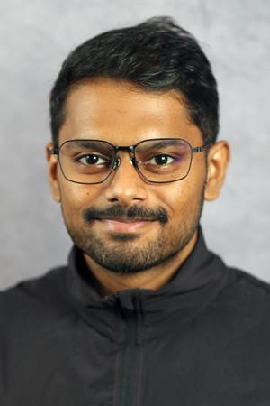
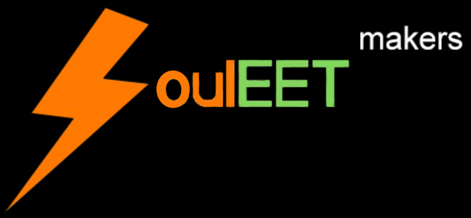
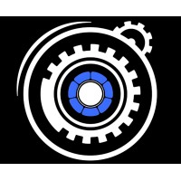
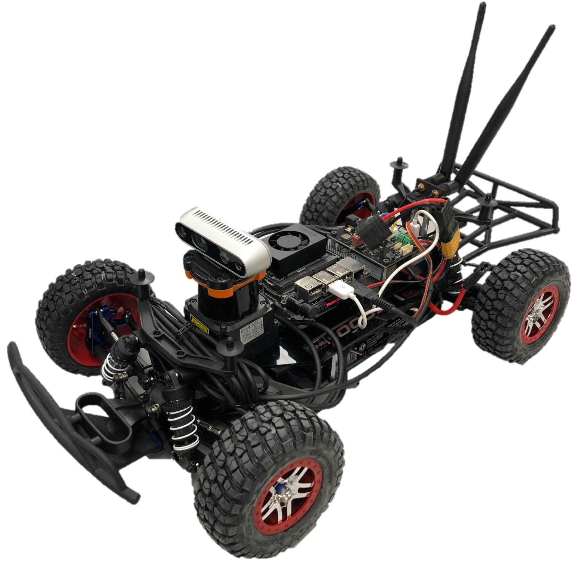
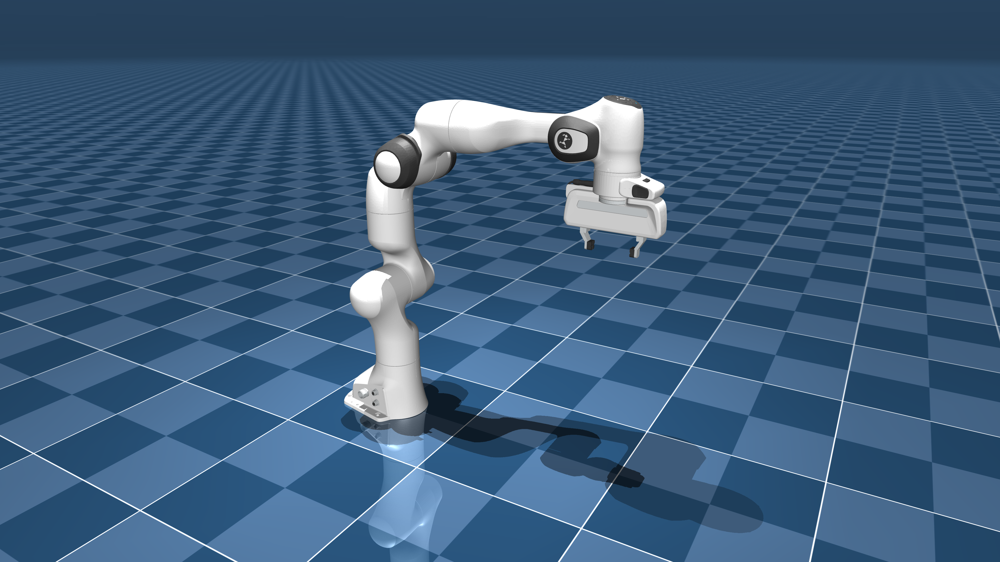
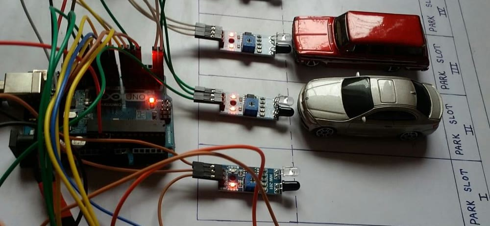
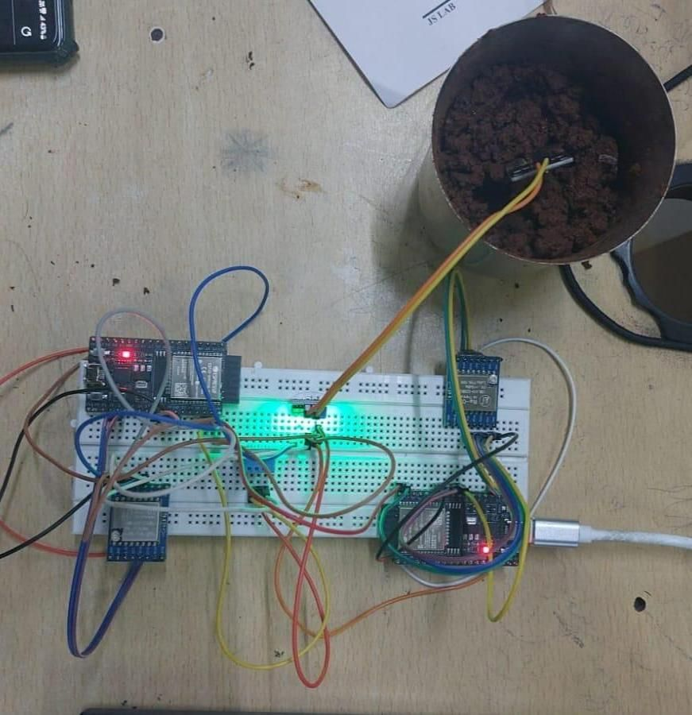
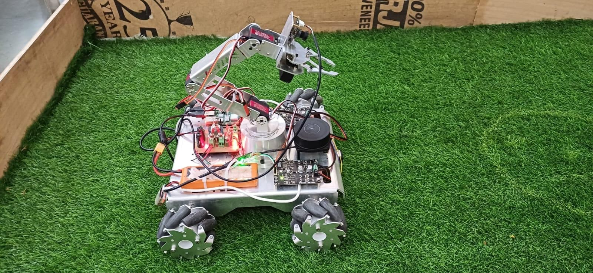
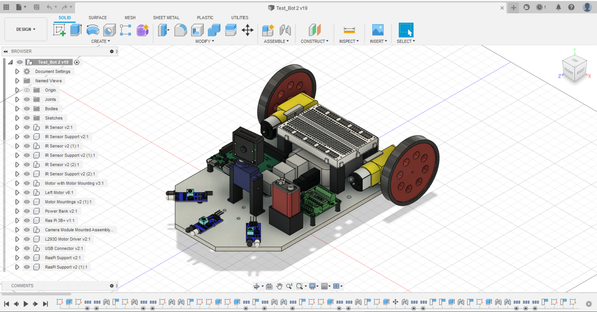

CMU MRSD '28 // FORMER ROBOTICS ENGINEER @ ADDVERB
SEEKING SUMMER 2027 ROBOTICS INTERNSHIPS
Building robots
that work beyond
the lab.
From deploying autonomous forklifts in industrial environments to pursuing robotics research at Carnegie Mellon, I build intelligent systems that perceive, navigate, and operate in the real world.

What I work on
SELECTED INDUSTRIAL ROBOTICS IMPACT
Built for the real world.
TATA Apple iPhone facility
Bengaluru, IndiaContributed to deploying a fleet of 13+ autonomous robots, achieving 30+ picks and drops per robot per hour.
Germany · Netherlands
Represented Addverb at the LogiMAT product launch in Stuttgart, Germany, and at its AMR Deployment Experience Centre in Zoetermeer, Netherlands.
WHO I AM
A LITTLE ABOUT ME
Where algorithms
meet the real world.
I'm a Robotics Engineer and master's student in Robotic Systems Development at Carnegie Mellon University, driven by a simple goal: building intelligent robots that work reliably outside controlled environments.
At Addverb Technologies, I developed perception and autonomy solutions for industrial autonomous forklifts—from 3D perception and precision docking to real-world deployments.
Today, I'm extending that foundation into robot learning, humanoid locomotion, and sim-to-real transfer, exploring how robots can adapt to increasingly complex environments. I enjoy working across the robotics stack—from algorithms and simulation to sensors, hardware integration, and deployment.
WHERE I'VE BUILT
THE JOURNEY SO FAR
Built in the real world.
Robotics engineering, applied R&D, and embedded hardware—built across industry and student teams.
INDUSTRIAL ROBOTICS
Addverb Technologies
December 2024 – April 2026 · Noida, India
Robotics Engineer · Autonomous Forklift
Engineered AI-driven perception, autonomous pallet handling, and precision docking for Addverb's FlowT 1000 & FlowT 1530 industrial forklifts. Translated robotics R&D into production-ready autonomy, supporting large-scale warehouse deployments and international product demonstrations.
- Docking Accuracy
- ±10 mm
- AMRs Deployed
- 13
- Picks/hr/Robot
- 30+
- Cost Reduction
- 8–10%
ROBOTICS R&D
Addverb Technologies
June 2024 – November 2024 · Noida, India
Mobile Robotics Intern
Benchmarked visual localization methods for AMRs, evaluated single-view 6DoF pose-estimation approaches, and developed obstacle-detection and pallet-localization workflows.
- Visual SLAM methods
- 3
- Object Pose
- 6DoF
- Obstacle Detection
- Vision
- Pallet Localization
- ICP

EMBEDDED HARDWARE
SoulEET Makers LLP
October 2023 – March 2024 · Pune, India
PCB & Embedded Hardware Design Intern
Owned ESP32/SIM7600 monitoring-board development and a compact Raspberry Pi GSM board, from component evaluation through fabrication and installation.
- Less Manual Intervention
- ~80%
- Battery Backup Increase
- 20%
- Output Efficiency Gain
- 10–15%
- Deployed Runtime
- 1+ year

STUDENT LEADERSHIP
PICT Robotics Club
September 2022 – June 2023 · Pune, India
Team Captain · ABU Robocon 2023
Led a multidisciplinary student robotics team and ran a three-day fundamentals workshop. Guided the team through mechanical design, perception, and control for the national ABU Robocon competition.
- All India Rank · 2023
- 14
- Institutions
- 80+
- Students Trained
- 120+
- National Rank · 2022
- 6th
SYSTEMS I'VE BUILT
ROBOTICS, AUTONOMY & CONNECTED SYSTEMS
Projects that move.
Selected work across robot autonomy, mobility, manipulation, and connected systems. Current and recent projects lead, followed by earlier work.

ONGOING CAPSTONE · CMU MRSD2026–2027
Humanoid Whole-Body Locomotion & Manipulation
Developing learning-based whole-body locomotion and control for a Unitree G1 humanoid to navigate industrial stairs, use handrail contact for stability, and manipulate tools. Exploring reinforcement learning, tactile sensing, and sim-to-real transfer.

CMU · ROBOT MOBILITYAUG 2026 - OCT 2026
F1TENTH
Autonomous Driving
Built ROS 2/C++ racing controllers for LiDAR emergency braking, PID wall following, Follow-the-Gap, Pure Pursuit, and RRT/RRT*. Curvature-aware speed planning cut a recorded lap from 12.00 s to 9.59 s (20.1%) with a 0.458 m maximum tracking error.

CMU · ROBOT AUTONOMYAUG 2026 - NOV 2026
Franka Robot Autonomy
Built joint-space motion-planning pipelines for a Franka Panda in MuJoCo, combining kinematic modeling and SAT collision detection with RRT exploration, shortcutting, and PRM roadmap construction.

EMBEDDED SYSTEMS & IOTA.Y. 2020–2021
IoT Smart Car Parking System
Designed and built the complete hardware prototype and embedded code, integrating IR-based slot monitoring with a Blynk mobile status view and Firebase-connected website workflow.

WIRELESS EMBEDDED SYSTEMSAUG 2024
LoRa-Based Precision Irrigation System
Designed a distributed agricultural monitoring prototype linking field sensors to a remote dashboard and irrigation-control interface over LoRa. Runner-up at PICT TechFiesta Hackathon.

MOBILE MANIPULATIONJUL 2023 — MAR 2024
Autonomous Mobile Manipulator
Designed and built a mecanum-drive robot integrating custom mechanical hardware, ROS 2 navigation, arm planning, and vision-based object identification.

EMBEDDED ROBOTICSJAN — JUN 2022
IoT-Enabled Surveillance Robot
Built a browser-controlled Raspberry Pi robot with live video, a remotely pan-able camera, and obstacle-sensor feedback. Awarded the Judges' Prize in the Instructables Electronics Contest.
VALIDATION & RECOGNITION
LEARNED, BUILT, RECOGNIZED
Proof of progress.
A visual archive of competitive wins, technical training, and structured learning milestones that support my robotics journey.
THINGS I BUILD WITH
MY TOOLBOX
The tools behind
the motion.
A working collection of technologies across the robotic software stack — perception, controls, learning, and embedded hardware.
Robotics & Simulation
ROS · ROS 2 · Gazebo · NVIDIA Isaac Sim · MuJoCo · Nav2
Perception & Computer Vision
OpenCV · Deep Learning · 2D/3D LiDAR · Depth Cameras · AprilTags · SLAM · ICP
Learning & Control
C · C++ · Python · PyTorch · Reinforcement Learning · PPO · SAC
Embedded & Hardware
Raspberry Pi · STM32 · Arduino · ESP32 · PCB Design · UART / SPI / I²C
Engineering Workflow
Git / GitHub · Linux · Docker · MATLAB · Fusion 360 · Altium · KiCAD
FOUNDATIONS
THE ACADEMIC SIDE
Never stop learning.
GRADUATE2026 — 2028
Carnegie Mellon
University.
M.S. Robotic Systems Development (MRSD) · Expected May 2028
Pittsburgh, Pennsylvania ↗
UNDERGRADUATE2020 — 2024
Pune Institute of
Computer Technology.
B.E. Electronics & Telecommunication Engineering · CGPA 9.32 / 10
Pune, India ↗
HSC · SCIENCEAUG 2018 — MAR 2020
Progressive Education Society's
Modern College.
Higher Secondary Certificate (HSC) · Science · 85.38%
Shivajinagar, Pune ↗
SSC · SCHOOLMAR 2018
St. Joseph Boys
High School.
Secondary School Certificate (SSC) · 95.40%
Khadki, Pune ↗
LET'S BUILD SOMETHING
Have a problem
worth solving?
I'm always interested in thoughtful conversations about robotics, research, and ambitious hardware. Reach out and let's talk.
Get in touch ↗